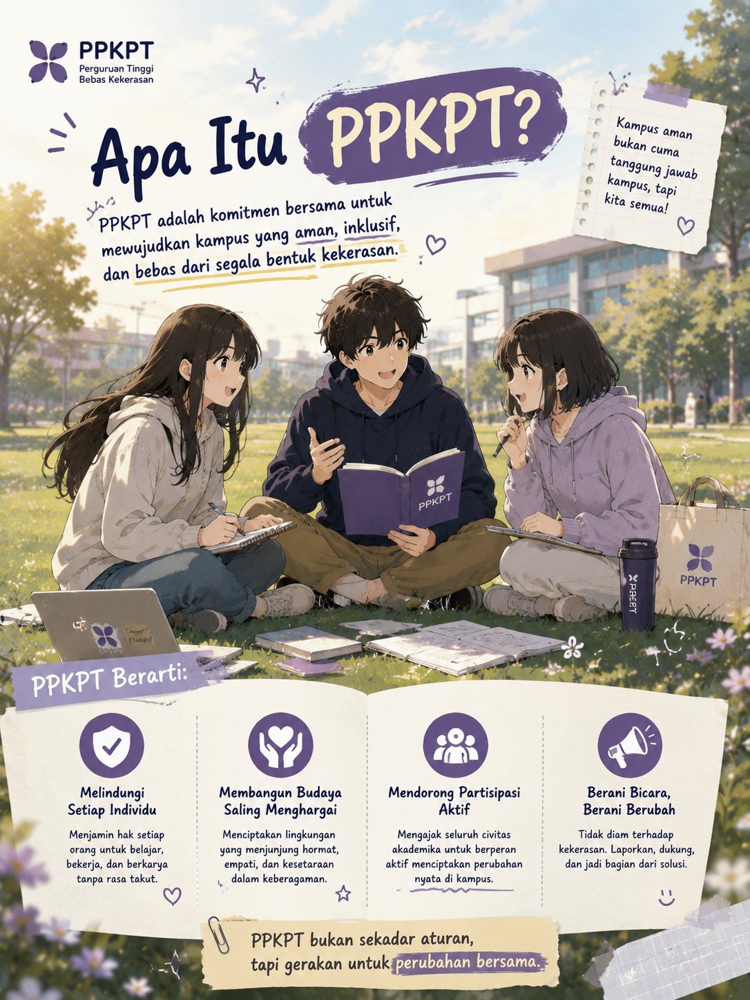

PPKPT (Pencegahan dan Penanganan Kekerasan di Perguruan Tinggi) merupakan program yang bertujuan menciptakan lingkungan perguruan tinggi yang aman, nyaman, inklusif, serta bebas dari segala bentuk kekerasan. Program ini hadir sebagai bentuk komitmen dalam melindungi seluruh sivitas akademika melalui berbagai upaya pencegahan, edukasi, penanganan kasus, dan pendampingan yang berkelanjutan.
Melalui PPKPT, mahasiswa, dosen, tenaga kependidikan, dan seluruh warga kampus diajak untuk bersama-sama membangun budaya saling menghormati, menjunjung tinggi nilai integritas, serta menciptakan suasana belajar yang sehat dan kondusif. Selain memberikan edukasi mengenai isu intoleransi, penyalahgunaan narkoba, korupsi, perundungan, dan kekerasan seksual, PPKPT juga menyediakan informasi mengenai mekanisme pelaporan serta langkah-langkah penanganan apabila terjadi suatu pelanggaran di lingkungan perguruan tinggi.
PPKPT bukan hanya menjadi sarana edukasi, tetapi juga menjadi wujud komitmen perguruan tinggi dalam menciptakan lingkungan yang aman, adil, dan bebas dari diskriminasi maupun kekerasan. Dengan adanya partisipasi aktif seluruh sivitas akademika, diharapkan tercipta budaya kampus yang saling peduli, menghargai hak setiap individu, serta mampu membangun ruang belajar yang positif, produktif, dan berintegritas bagi semua.